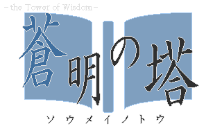

<DOCTYPE html>
<html>
<head>
	<meta http-equiv="Content-Type" content="text/html; charset=UTF-8">
	<link rel="stylesheet" type="text/css" href="common.css">
	<script type="text/javascript" src="jquery-1.11.1.min.js"></script>
	<script type="text/javascript">
		// ここに処理を記述します。
	</script>
	<style>
		textarea {
			resize: none; 
			height:40%;
			width:100%;
		}
	</style>
</head>
<body>
<div class="ContentsDetail">
	<center>
		
		<br>
		蒼明の塔 ver1.01配信中です。<br>
		<a href="games.html" target="_self" >こちら</a>よりDLできます。
	</center>
	<br>
	<hr>
				更新履歴<br>
			<textarea name="MSG" cols=50 rows=20 style readonly >
2014/06/29 蒼明の塔 ver1.01に更新。
2014/06/16 サイトをリニューアル。
2013/01/04 蒼明の塔 ver1.00配信中。
2013/12/13 蒼明の塔 ver0.71配信中。
2013/12/13 蒼明の塔 ver0.70配信中。
2013/12/06 蒼明の塔 ver0.60配信中。
2013/11/28 蒼明の塔 ver0.50配信中。
2013/03/31 Sky'sTowerをver.β#+1に更新。
2013/03/27 Sky'sTowerをver.β#に更新。
2013/03/25 Sky'sTowerを追加。
           自作ゲームからどうぞ。
2013/03/19 ブログを追加。
2012/11/26 Ricordo凍結。すいません。
2012/03/04 Ricordo ver0.10配布開始。
　　　　　　自作ゲーム置き場解禁。
2011/11/14 サイトをリニューアル。
			</textarea>
</div>
</body>
</html>
